Soja, Okayama: things to do, food and stays
Soja · Okayama
Soja
Highlighted on the Okayama map.

Stay
ＳＴＡＴＩＯＮ ＰＬＡＺＡ ホテル池田屋
STATION PLAZA Hotel Ikeda Ya
Hotel in Ekimae, Soja with parking and business travelers.
国民宿舎サンロード吉備路
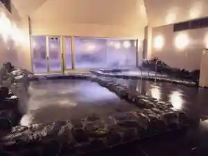
Kokuminshukusha Sanrodo Kibi Michi
Family-run minshuku in Misu, Soja with a large communal bath.
サントピア岡山総社
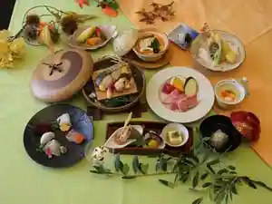
Santopia Okayama Soja
Inn in Shin, Soja with Wi-Fi and parking.
Dining
麺処 おぐら
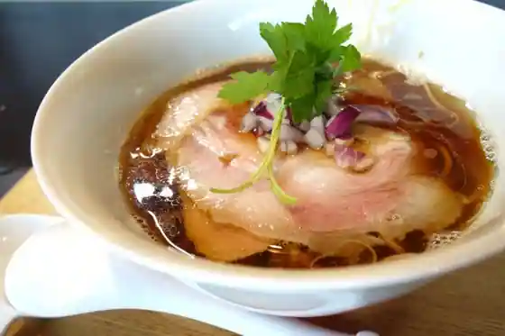
Men Tokoro Oku Ra
よこた手打うどん
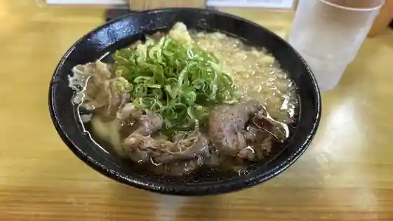
Yokota Teuchi Udon
インダストリー
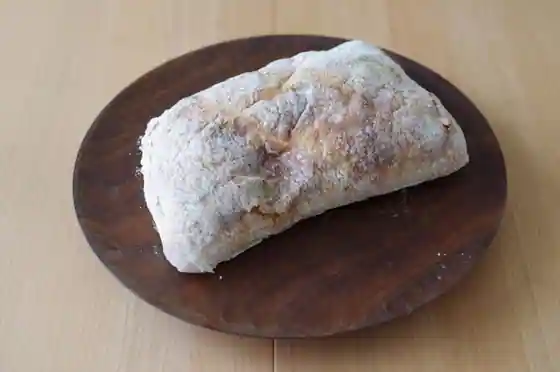
Indasutori
ロジック
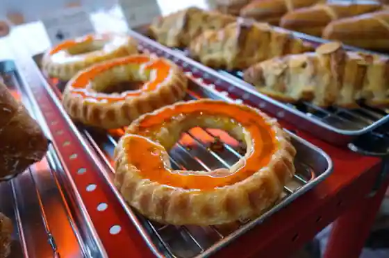
Rojikku
シエルブルー
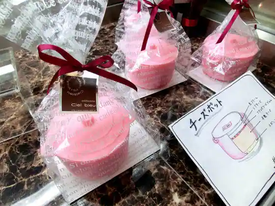
Shieruburu
ボンボン ブレッド
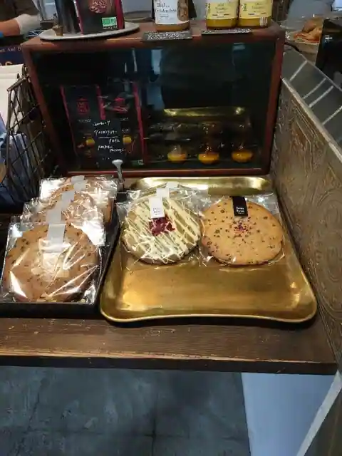
Bonbon Bureddo
トシゾー SOJA
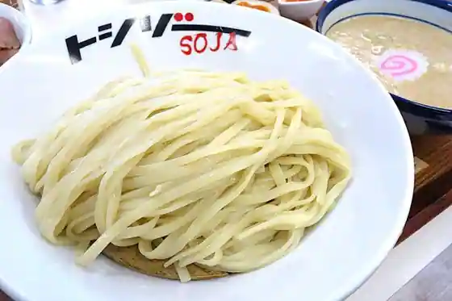
Toshizo SOJA
洋食の店 ブーン
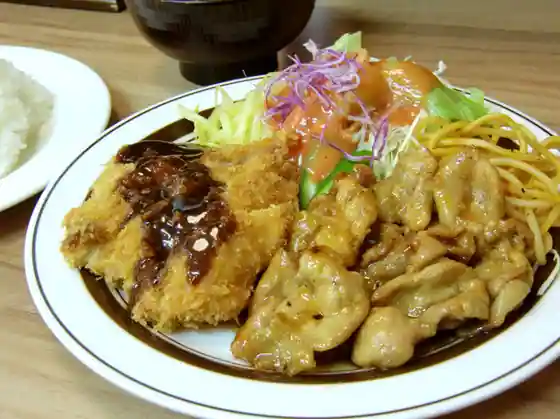
Yoshoku No Bun
ベーカリー トングウ
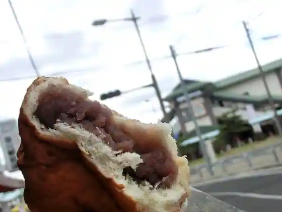
Bakery Tongu
ナンバベーカリー
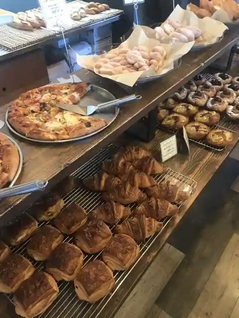
Nanba Bakery
PIZZERIA CERCHIO
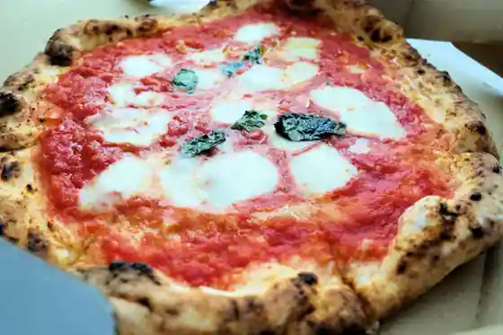
PIZZERIA CERCHIO
中華kinomi
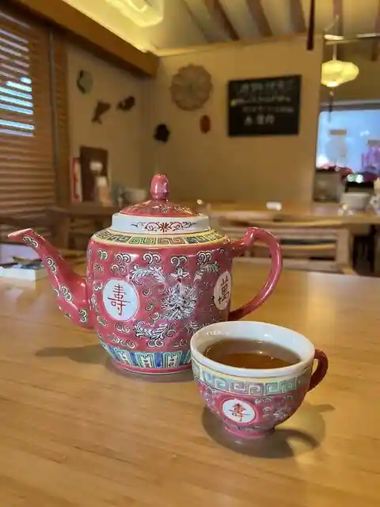
Chuka kinomi
珈琲と人
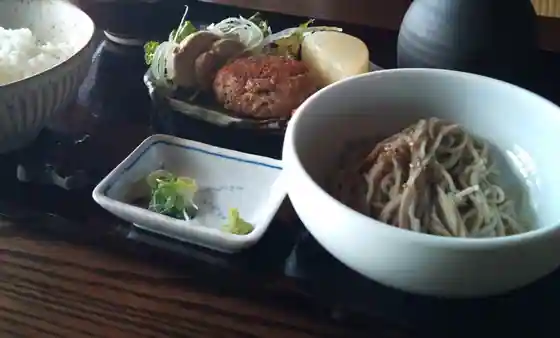
Coffee To Nin
創作パン工房 UNE
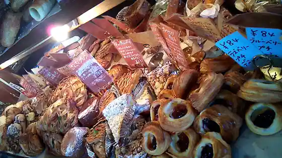
Sosaku Bakery Kobo UNE
オールウェイズ
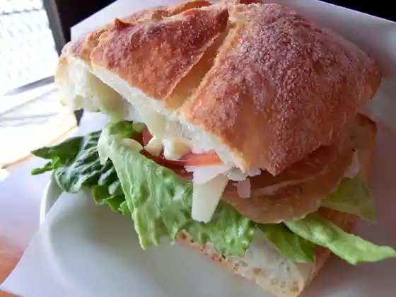
Orueizu
ネコマチ
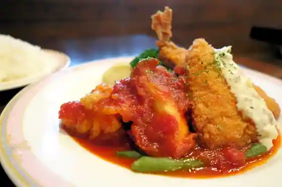
Nekomachi
プティ・グレーヌ
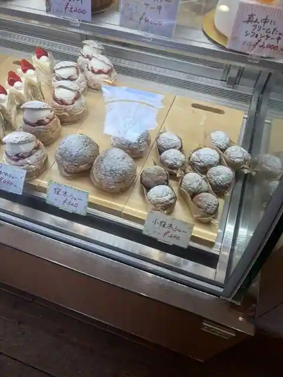
Putei Gurenu
そば処 博吉
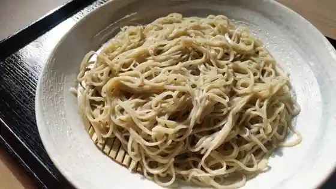
Soba Tokoro Hirokichi
洋風食堂はらいそ
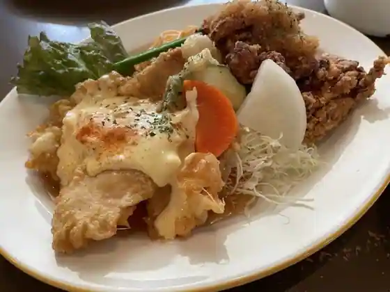
Yofu Shokudo Haraiso
珈琲館 モカ
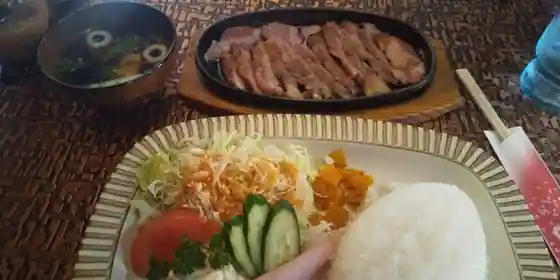
Coffee Kan Moka
晴レばれ。
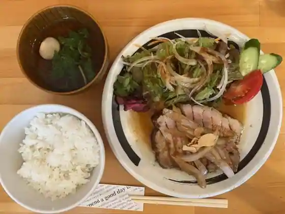
Sei Re Bare.
たいこ
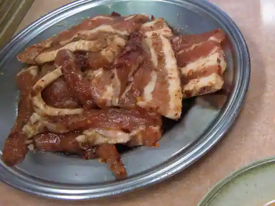
Taiko
Cucina 湯田園
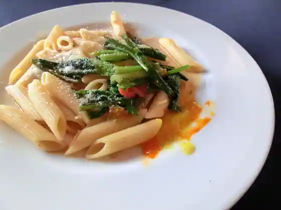
Cucina Yuda Sono
ピッツェリア チッチョ
Pizzeria Chitcho
Sights
Kijo Yama (Oni no Shiro)
Bitchu Kokubunji

Go Kei

JA Hare no Kunioka Yama Jun Kan Plaza

no Maru Engei Kibi Michi Farm

Soja Kijo Yama Bijita Center
Sunagawa Park
Hofuku Tera
Araki Rentasaikuru (JR Soja Ekimae)
Soja Kita Park
San Naohiro Ba Etokosoja
Karube Shrine
Kibi Michi Onsen
Sunagawa Koen Campground
Komori Tsuka Burial Mound
Takama Campground
Kibi Michi Nippon Isan Rentasaikuru (Kibi Chari)
Kibi Michi Boranteia Kanko Gaido Kyokai
Seion Furusato Fureai Plaza
Nosambutsu Chokubai Tokoro Tane I Ya
Sakuyama Burial Mound
Soja Sesshu Seitan Chi Park
Soja Tourism Association Kanko Kaki Sono
Soja Ekimae Tourist Information
Soja Miya (Bitchu Kuni Soja Miya)
Kibi Michi Kankoannai Center
Kibi Michi Fudoki no Oka
Miyake Shuzo
Soja Suihen no Raku Ko
Go Kei Tourist Information
Soja Kibi Michi Bunka Kan
Kibi Michi Jitenshado
Chi Kyu Kawa
Kokubunji Tourist Information
Soja Machikado Kyodo Kan
Fukuyama Castle Ruins
Fukuro Art Museum
Bitchu Kokubun Amadera Ato
Koya Rentasaikuru (Kokubunji Mae)
Miyake Shuzo Museum
Oni no Shiro Gorufu Kurabu
Yarai Shrine